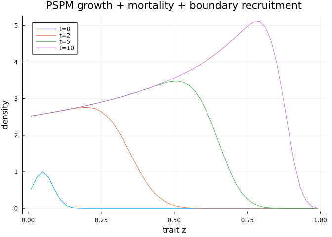
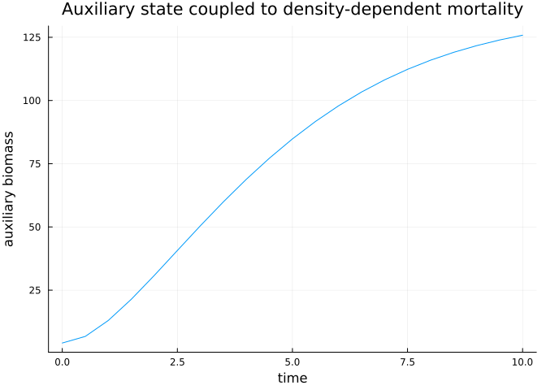

PSPM transport on a fixed mesh
Overview
A physiologically structured population model (PSPM) tracks a continuous distribution $n(z, t)$ over a trait $z$ that evolves in time according to a transport equation:
\[\frac{\partial n}{\partial t} = -\frac{\partial}{\partial z}\bigl(g(z, t)\, n\bigr) - \mu(z, t)\, n + s(z, t),\]
with a boundary influx at the lower edge representing recruitment. CSPD provides PSPMIPMProblem for this class of models, with an upwind finite-volume discretisation (FixedMeshUpwind) on a ContinuousDomain, and lowers to a SciML ODEProblem via to_ode_problem.
Setup
using ContinuousStatePopulationDynamics
using StructuredPopulationCore
using OrdinaryDiffEq
using PlotsThe transport-discretisation type is exposed for dispatch:
FixedMeshUpwind() isa AbstractTransportDiscretizationtrueA simple growth-mortality PSPM
Individuals grow at rate g(z) = 0.2 (1 - z) (von Bertalanffy-like slowdown approaching maturity) and die at constant rate μ = 0.1. Recruitment delivers a constant influx of newborns at the lower boundary:
domain = ContinuousDomain(0.0, 1.0, 50)
zs = meshpoints(domain)
velocity = z -> 0.2 .* (1.0 .- z) # broadcast — matches points-vector branch
mortality = 0.1
boundary_lower = 0.5
n0 = exp.(-((zs .- 0.05) ./ 0.05).^2)
prob = PSPMIPMProblem(domain, n0, (0.0, 10.0);
velocity = velocity,
mortality = mortality,
boundary_lower = boundary_lower,
discretization = FixedMeshUpwind())
prob isa AbstractContinuousIPMProblemtrueodeprob = to_ode_problem(prob)
sol = solve(odeprob, Tsit5(); saveat = [0.0, 2.0, 5.0, 10.0])
n_pop = length(n0)
densities = [u[1:n_pop] for u in sol.u]
plot(zs, densities; labels = ["t=0" "t=2" "t=5" "t=10"],
xlabel = "trait z", ylabel = "density",
title = "PSPM growth + mortality + boundary recruitment")
PSPM with auxiliary state
A PSPM problem can carry an auxiliary ODE state coupled to the density. Here the auxiliary variable tracks total population biomass and feeds back into mortality (logistic-style density dependence):
mortality_dd(z, n, aux, p, t) = fill(0.05 + 0.001 * aux[1], length(z))
recruitment_dd(z, n, aux, p, t) = zeros(length(z))
auxiliary_rhs(n, aux, p, t, dom) = [sum(n) - aux[1]] # exponential filter on biomass
prob_dd = PSPMIPMProblem(domain, n0, (0.0, 10.0);
velocity = z -> 0.2 .* (1.0 .- z),
mortality = mortality_dd,
source = recruitment_dd,
boundary_lower = 0.5,
aux0 = [sum(n0)],
auxiliary_rhs = auxiliary_rhs)
odeprob_dd = to_ode_problem(prob_dd)
sol_dd = solve(odeprob_dd, Tsit5(); saveat = 0.5)
# Slice population vs auxiliary
biomass = [u[end] for u in sol_dd.u]
plot(sol_dd.t, biomass;
xlabel = "time", ylabel = "auxiliary biomass",
title = "Auxiliary state coupled to density-dependent mortality",
legend = false)
remake on PSPM problems
prob_long = ContinuousStatePopulationDynamics.remake(prob; tspan = (0.0, 20.0))
prob_long.tspan(0.0, 20.0)Solver dispatch restrictions
PSPM is continuous-time. Discrete iteration and direct eigenanalysis are not supported and raise ArgumentError:
try
solve(prob, DirectIteration())
catch err
err
endArgumentError("DirectIteration is not defined for PSPMIPMProblem; use a SciML ODE algorithm instead.")try
solve(prob, EigenAnalysis())
catch err
err
endArgumentError("EigenAnalysis is not defined for PSPMIPMProblem; use to_ode_problem or a SciML ODE solve instead.")Summary
PSPMIPMProblemcarries a domain, initial density, transport closure (velocity), mortality, optional source/recruitment, boundary influx, and optional auxiliary ODE state.FixedMeshUpwindis the default transport discretisation; anAbstractTransportDiscretizationinterface allows future alternatives.- The lowered ODE state is
vcat(n, aux); slice the leadingn_states(domain)entries to recover the density. - This closes the CSPD vignette suite covering all concrete problem/structure/domain types.